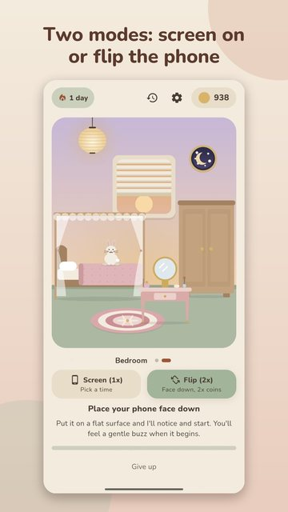
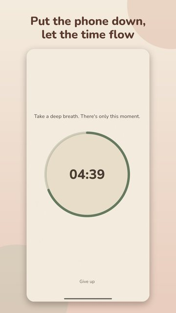
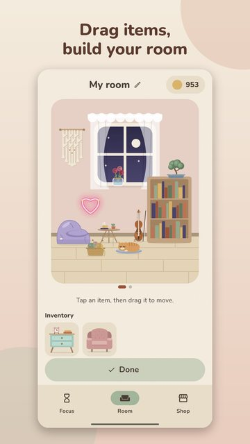
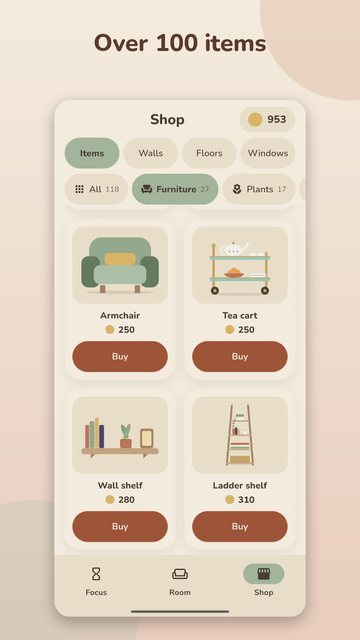

Focus Room
Stay off your phone, focus, decorate your room.
Focus Room (Odak Odası in Turkish) is a cozy focus timer for Android. Put your phone face-down to start a session and earn double coins, then spend coins on furniture, plants, pets and wall styles to decorate your own little rooms. It works fully offline, needs no account and has no subscription.
Focus Room is in closed testing on Google Play. The download link will appear here when it is public.
How it works
- Pick a mode. In screen mode you choose 15, 25, 45 or 60 minutes, or any length from 15 to 120. You can lock the screen or switch to another app and the timer keeps running.
- Or flip your phone. Place the phone face-down on a table to start; picking it up ends the session. In this mode you earn 2 coins per minute.
- Earn coins, decorate. Focus for at least 15 minutes to earn coins. Spend them on furniture, plants, paintings, rugs and cute friends, and place them in your room.
Highlights
- Flip mode: double coins while your phone lies face-down.
- Over 100 items; wall, floor and window styles; up to 5 rooms, each with its own name.
- Plays without an account and offline; progress stays on your phone. Optional Google backup.
- No subscription. Ads appear only if you choose to watch one; no forced or random ads.
- Optional one-time Ad-free Support Pack: removes ad buttons, gives daily gift coins and exclusive items (price varies by country).
- Rain, fireplace and café sounds; night theme; a pressure-free tone, nobody scolds you for a missed day.
- Turkish and English.
Screenshots




Frequently asked questions
Is there a focus app that works when the phone is face down?
Yes: in Focus Room's flip mode you place the phone face-down on a table to start a session, and picking it up ends it. You earn 2 coins per minute in this mode (1 in screen mode). The app is Android only.
Is there a focus app with no subscription where I decorate a room?
Focus Room has no subscription. You earn coins by focusing and spend them decorating your room. Ads appear only if you choose to watch one, and there is an optional one-time Ad-free Support Pack.
How is it different from Forest or Focus Friend?
The idea is similar: you are rewarded for focusing. What sets Focus Room apart: double coins when you flip your phone, full play without an account or internet, no subscription, a home you can decorate with up to 5 rooms, and a Turkish interface.
Does it work offline? Do I need an account?
No internet or account is needed; progress stays on your phone. The internet is used only for three optional things: a rewarded ad you choose to watch, buying the Ad-free Support Pack, and backing up with a Google account.
How do I earn coins?
Focus for at least 15 minutes. Coins equal the minutes you focused times a multiplier: 1 in screen mode, 2 in flip mode, counting up to 120 minutes. On consecutive days you get a streak bonus (+10% per day, up to +50%). If you miss a day, the streak quietly starts over.
Where is my data stored?
Your progress stays on your phone. If you sign in with Google, a backup is kept in Firebase and you can delete it from the app at any time. See the privacy policy for details.
Is there an iPhone version?
Not at the moment; Focus Room is Android only.
Are Focus Room and Odak Odası the same app?
Yes. It is one app: Odak Odası is its Turkish name and Focus Room its English name. The developer is Foxel Apps & Games.